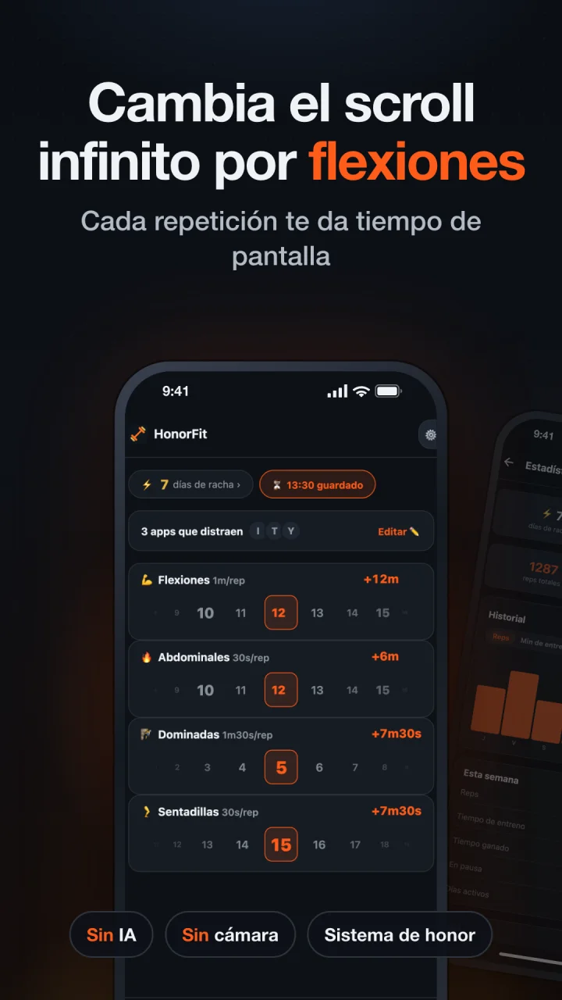

Bloquea Reddit con flexiones y haz que cada vistazo cueste unas repeticiones
En un informe de tiempo de pantalla, Reddit casi nunca se ve alarmante al principio. No hay un atracón de tres horas como en YouTube. Hay treinta y cinco veces que agarras el celular: en la fila, entre tareas, mientras compila algo, en el primer minuto después de despertar. Cada una son tres o cuatro minutos de recargar y leer el principio de un hilo. A lo largo del día, esos minutos suman mucho.
Esa forma cambia cómo deberías bloquearlo. Un límite diario es la herramienta equivocada para un hábito hecho de vistazos cortos. Lo que ayuda es que cada vistazo cueste algo.
Qué hace que Reddit enganche
- Siempre hay algo nuevo. Tus subreddits están activos a todas horas, así que deslizar para recargar casi siempre te muestra algo que no has visto. Ese es el patrón de recompensa impredecible que vuelve compulsivo el revisar.
- Los hilos de comentarios no se acaban. La publicación toma diez segundos. Las respuestas, y las respuestas a esas, toman diez minutos.
- Las notificaciones te traen de vuelta. Una respuesta a tu comentario, una publicación en tendencia, un “quizá te guste”. Cada una es una razón para abrir la app.
- Se siente como investigar. Reddit de verdad es donde viven muchas buenas respuestas. Eso hace fácil justificar revisar “solo una cosa”.
Antes de bloquear nada: dos cambios gratis
El bloqueo funciona mucho mejor cuando quitas los disparadores, y estos dos toman como un minuto:
- Apaga las notificaciones de Reddit en los ajustes de tu celular, salvo los mensajes directos si de verdad los necesitas. Probablemente casi todos tus vistazos empiezan con una notificación.
- Saca la app de tu pantalla de inicio. Ponla en una carpeta en la última página, o déjala solo en la biblioteca de apps. Si tienes que buscarla, es menos probable que la abras en piloto automático.
Bloquea Reddit en iPhone
- Abre HonorFit y toca Continuar para darle acceso a Tiempo de uso.
- Ve a Apps a bloquear › Abrir selector de apps, busca Reddit y márcala. Si lees Reddit en una app de terceros, márcala también.
- Listo. Ahora la pantalla de bloqueo de Apple tapa Reddit, y HonorFit manda una notificación que puedes tocar para ir a las ruedas de repeticiones.
Bloquea Reddit en Android
- Permite el Acceso a datos de uso y Mostrar sobre otras apps desde la tarjeta Permisos necesarios de HonorFit. El acceso a datos de uso solo le dice a HonorFit qué app está abierta. No puede ver lo que estás leyendo.
- En Ajustes › Funcionamiento en segundo plano, pon el uso de batería en Sin restricciones para que el celular no detenga el bloqueador.
- Abre Apps a bloquear. Reddit probablemente va a estar cerca de arriba, porque la lista empieza con las apps que más usaste en las últimas 24 horas. Márcala, junto con cualquier app de Reddit de terceros que tengas instalada.

Un tipo de cambio para muchas visitas cortas
Con Reddit no estás tratando de pagar sesiones largas. Le estás poniendo un precio pequeño a cada visita. Yo lo configuraría así:
- 10 abdominales = 5 minutos. Los abdominales dan 30 segundos cada uno por defecto. Cinco minutos alcanzan para leer bien un hilo, y diez abdominales bastan para que te preguntes si de verdad quieres entrar.
- O 5 flexiones = 5 minutos, si prefieres el valor por defecto de un minuto por flexión.
- Mantén el saldo pequeño. No te ganes veinte minutos en la mañana para gastarlos de a poquito. Con un saldo pequeño, cada vistazo es una decisión nueva, y esa es toda la idea.
HonorFit solo gasta el saldo mientras Reddit está en pantalla, así que un vistazo rápido te cuesta un vistazo rápido. Un ajuste gratis que le queda muy bien a Reddit es Reiniciar a medianoche. Los minutos que no gastaste no pasan al día siguiente, así que no puedes ahorrar durante la semana un domingo entero de scroll.
Cuidado con el atajo del navegador
Reddit es la app que la gente más cambia por el sitio web. Bloqueas la app y tu pulgar se va a Safari o Chrome, y reddit.com funciona perfecto sin cuenta. HonorFit bloquea apps, no sitios web. Si te pasa, agrega un límite de sitios web en el Tiempo de uso o el Bienestar digital de tu propio celular. O cierra sesión de Reddit en tu navegador, para que la versión web sea menos cómoda que ganarte tiempo para la app.
El sistema de honor aplica aquí también. Podrías registrar abdominales que no hiciste. Pero la razón por la que estás leyendo esto es que querías que cada vistazo costara algo. Solo tú puedes hacer que eso sea cierto, y ninguna cámara lo haría por ti.
HonorFit Blocker pone Reddit, o cualquier otra app, detrás de unas repeticiones, para que cada vistazo sea una decisión. Gratis en iPhone y Android. Sin cámara, sin IA, sin cuenta y nada sale de tu celular.